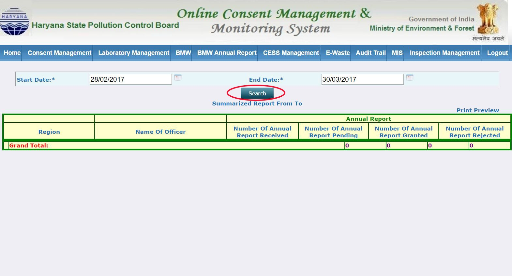

MIS Annual Report Procedure¶

Step 2: Hover Annual Report Management and click 1. BMW Annual Report¶

Step 3: Select ‘start date’ and ‘end date’ and click search¶
Step 4: View Search Result¶

Step 5: Click on print preview¶
A popup window will open and on clicking the resulting report can be printed

Step 6: Click on either number of Annual Report - received, pending, granted, rejected¶